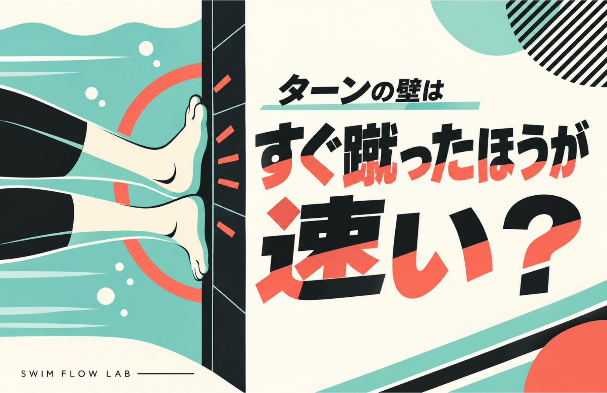
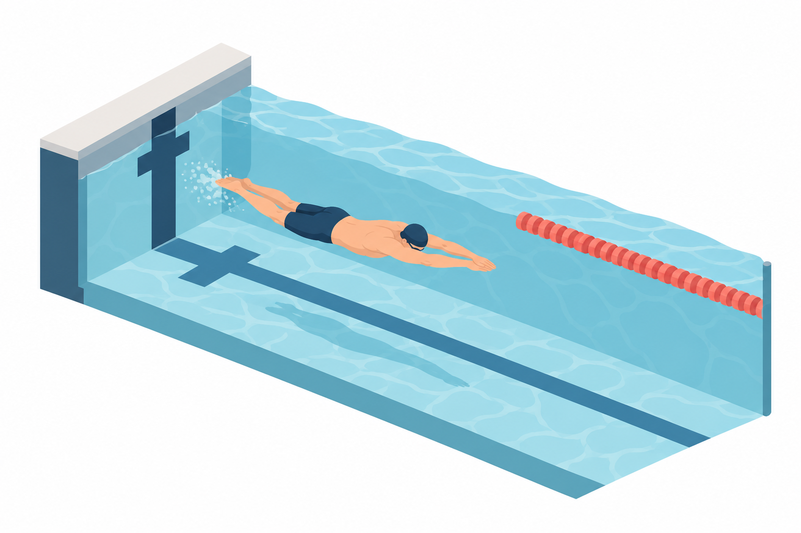
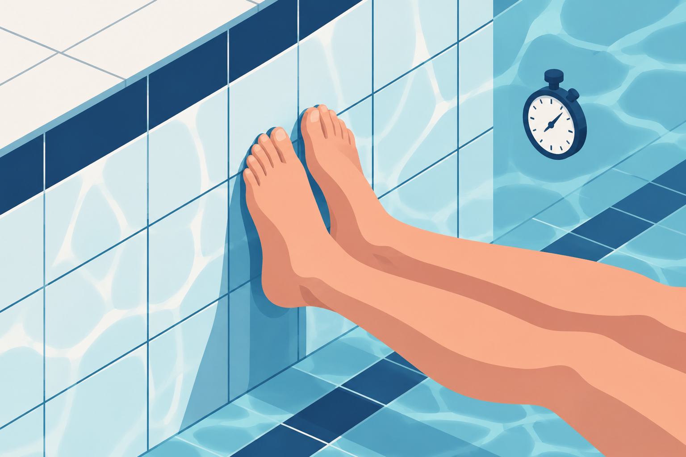
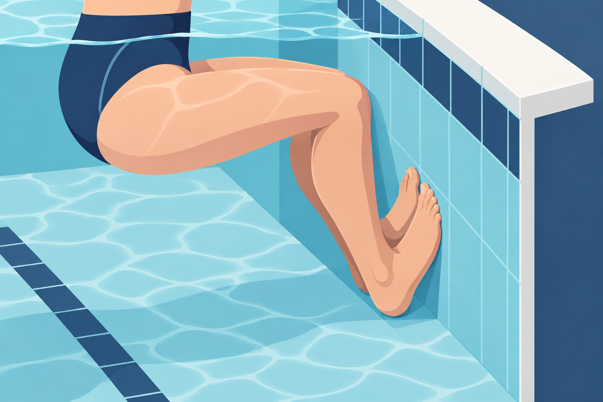
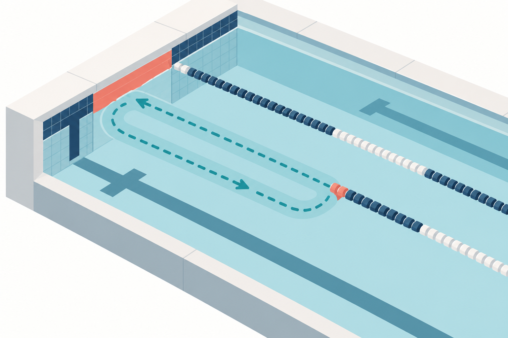
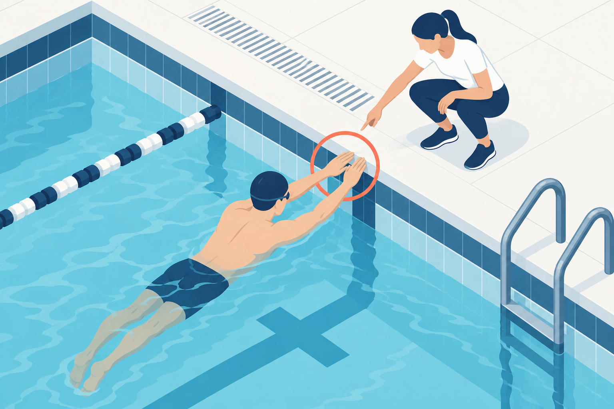
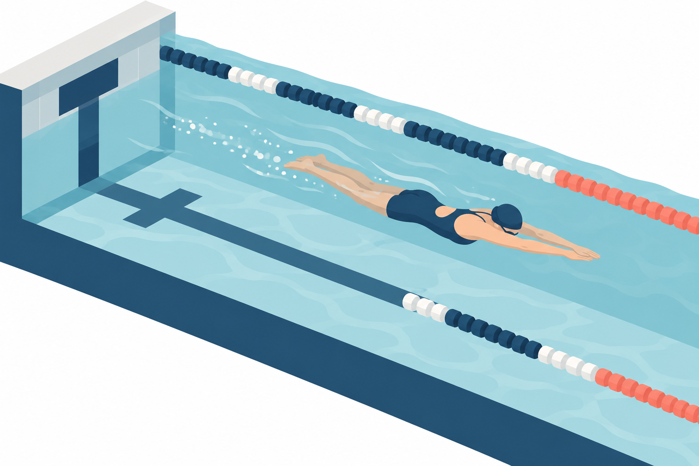

SWIMMING RESEARCH / 04
ターンは壁をすぐ蹴ったほうが速い？
壁を離れる早さとその先へ進む速さをつなげる

足が壁に着いたら、すぐ蹴る。ターンで時間を失わないためにそう意識しているのに、急いだときほど壁の先へ進まない。そんな経験はないでしょうか。足が壁から離れる瞬間だけを見れば素早くても、泳ぎ出したところで前の泳ぎより遅れてしまうことがあります。
もっと急ぐべきか、それとも少し待つべきか。壁に触れる時間を変えた実験を見ると、その二択だけでは解けない理由が分かります。蹴るために使った時間と、蹴ったあとに得られた進み方を一緒に見る必要があるのです。
対象は、回転して足を壁につけるクイックターンです。壁の前後で何が起きているかを整理し、次の練習でどこを見直すかまで考えていきます。
1 壁を離れた瞬間をゴールにしない
たとえば、足が着いたあとに素早く壁を離れたものの、進む方向が定まらず、泳ぎ出す前に姿勢を直したとします。壁に触れていた時間は短くなっていても、同じ地点へ着くまでの時間まで短くなったとは限りません。これは動きを考えるための例ですが、『壁を離れる早さ』と『ターン全体の速さ』を分けると、急いだのに進まないという感覚を整理できます。

壁接触時間は、足が壁に触れてから離れるまでの時間です。実際のターンには、その前の接近と回転、その後の滑走や水中動作もつながっています。接触時間はその一部分であり、短くすれば残りの部分も自動的によくなるわけではありません。
壁接触時間は、ターンの一部分
前後もつなげて測る
足が壁に着くまで
足が着いてから 壁を押して離れるまで
離れてから目印まで
接触時間だけ短くしても、前後で遅れれば全体が速くなるとは限りません。
そこで、練習のゴールも足が離れた瞬間より先へ置きます。壁へ近づくところから折り返し、決めた目印を通るまでを見てください。『足を早く離せた』と『目印へ早く着いた』を分けて記録すると、素早い動きが実際の速さにつながったかが分かります。
2 接触時間を変えた実験では平均で普段が最速
接触時間を変えるとどうなるのでしょうか。Davidらは国内大会レベルの泳者18人で、短い・普段・長い条件を比べ、壁の5m手前から折り返して5m離れるまでを測りました。平均は普段が最速でしたが、統計的に明確な差が認められたのは、普段と長い条件の間だけでした。短くすれば改善するとも、普段が必ず短い条件よりよいとも言い切れません。［1］
図で確かめる
同じ5m線を往復して測る
測ったのは壁に触れていた時間だけではありません。5mの線から壁へ進み、折り返して、同じ5mの線へ戻るまでです。
上から見た測定区間の模式図
行き5m ＋ 帰り5m。その間の壁接触も含めて測ります。
「平均の順位」と「差が確かか」は別
平均を並べると普段が最速でした。しかし短い条件との違いについては、差があると言い切るだけの根拠が得られませんでした。「有意差なし」は全員が同じタイムだった、という意味ではありません。

壁接触時間を変えた3条件
壁の5m手前から、折り返して5m先まで
普段との有意差はなし
平均値では最速
普段より有意に遅かった
国内大会レベルの泳者18人。普段が短い条件より必ず速い、とまでは言えません。
一方、研究者は壁を押す力や映像も分析し、接触の終わりに身体が流線形にまとまった状態で大きな力を出すこと、そのために十分な接触時間を確保することを重視しています。ここだけを読むと『長く壁にいたほうがいい』と聞こえますが、そういう結果ではありません。『短く・長くと指示して試した成績』と、『力と姿勢の分析から改善の方向を考えたこと』は、別の話です。
実験結果と、考察を分ける
Davidら：壁前5mから折り返し後5m
平均は普段が最速。 普段は長い条件より有意に速く、 短い条件との差は明確でない
接触の終わりに身体をまとめ 力を出す時間が必要
全員がもっと長く待てば 速くなる、ではない
足が壁に触れている間は、ただ止まって待っているわけではありません。壁を押して身体の動きを変え、次に進む形へつなぐ局面でもあります。短くするために、その動作や姿勢を整える時間まで省いては、削った時間が得にならないという読み方ができます。反対に、必要な動作ができているのに、押さずに待つ時間を足す理由にもなりません。まずは普段のターンを基準にし、急ぐ意識で何が変わるかを確かめるのが、ここから練習へ持ち帰りたいことです。
この実験には慣れない条件や疲労の影響があり、提案された動作を長期練習した効果までは確かめていません。普段のターンが完成形と決まったわけでもありません。だから、接触時間を一律に増減するより、自分に起きている変化から見直す場所を選びます。
3 急ぐときに何まで変えている？
『早く蹴る』と考えたとき、足が着く位置まで普段と変わっていないでしょうか。いつもより身体が壁へ近づいて窮屈になったり、反対に足が遠くなって蹴りにくかったりするなら、接触時間だけの問題として考えると見落としが出ます。

同じ実験では、普段より壁に近い・普段・遠い位置からのターンも比べました。映像がそろった13人の分析では、普段の区間タイムが、近い条件にも遠い条件にも有意に勝りました。別途、壁と腰の最小距離を脚の長さで割る『タック指数』から予測した最適値は平均約0.70でした。ただしモデル上の推定で個人差があり、全員をその距離へ変えれば速くなると実証した数字ではありません。［1］
図で確かめる
0.70は「70cm」でも「70度」でもない
タック指数は、ターン中に腰がプールの壁へ最も近づいたときの距離を、脚の長さで割った割合です。計算の説明だけの仮例として脚の長さ100cm、最も近づいた距離70cmなら、70÷100＝0.70。70cmを目指す指示ではありません。
18人の実験なのに、ここでは13人？
実験全体の参加者数と、この距離の分析に使えた人数は違います。距離については映像がそろった13人を分析した結果として読みます。
自分では指数を計算する前に、普段と急いだときの二つの場面を比べてみましょう。一つは足が壁に着く場面、もう一つは離れる場面です。足が着いた時点ですでに窮屈なら、壁への入り方を指導者に見てもらう候補になります。足は普段どおりに着いているのに、離れるときに腕が進む方向へまとまらないなら、蹴り出す準備を確認する候補になります。
足が着くときと、離れるときを比べる
普段と急いだときの違いを見る
壁との距離はどうか 窮屈になっていないか
腕と身体は 進む方向へまとまるか
これは映像から原因を断定する方法ではなく、相談する場所を絞るための見方です。全員が腕を直す必要も、壁との距離を変える必要もありません。『どこも気にならないが時間だけ短くしたい』なら、まず普段の動作のまま区間タイムを確かめてから、変更が必要かを考えても遅くありません。
4 壁の先の同じ場所まで比べる
蹴り出しを変えたら、壁のすぐ近くでは速く見えるのに、泳ぎ始めると差がなくなった。そんな場合は、どこまで測ったかで評価が変わります。壁の前後の短い区間を測る場合と、接近や離壁後のその先まで含める場合では、見ている動作が違うからです。

Kosterらが160人による2,813回のターンを分析した結果では、短い評価区間ほど、頭を沈めてから足を壁につけるまでの時間や壁接触時間の変化を捉えやすく、長い区間は接近する泳速度を見るのに向いていました。区間同士の成績は強く関連しましたが、どの動作が変わったかを知りたいときは区間の選び方が重要になります。［2］
「人」と「回」は別々に読む
160人は泳者の人数、2,813回は分析したターンの回数です。一人につき一回だけではなく、複数のターンを含みます。2,813人を調べたという意味ではありません。
図で確かめる
長く測ると、壁から離れた動作も入る
短い区間は壁の近くに注目し、長い区間はそこへ近づく泳ぎや離れた後まで含めます。同じターンでも、含める範囲を変えると見ているものが変わります。
時間の流れ：左から右へ →
泳ぎ
回転・接触
進み
比べる2回では、開始と終了の目印を同じにします。
比較する2回は、同じ区間で
例：壁の前後5mを測る
頭が同じ目印を通る瞬間でそろえる
始点から壁へ近づき、折り返して終点まで測る区間の整理です。
どの区間を測るかで、見える変化が違う
比較する2回は、始点と終点をそろえる
頭を沈めてから足が着く時間や 壁接触時間の変化を見る
接近する泳速度の 変化を見る
今回の『急いで蹴ると本当に速くなるか』を確かめる練習案では、接近から壁の先までを一続きにして比較します。安全に測れる環境なら、壁の5m手前から折り返して5m離れるまでが一例です。いつもこの区間が最適という意味ではありません。測りたい場面に合う目印を選び、比べる条件同士では同じ始点と終点にします。頭が目印を通った瞬間に測るなら、次も頭で測ります。
普段のターンと比べるときは、近づく泳ぎの速さや、壁を出たあとの動作もできるだけそろえてください。区間が速くなっても、単に壁へ速く泳いできただけなら、蹴り出しを変えた効果とは分けて考えます。時計と映像や指導者の観察を合わせるのは、その違いを見つけるためです。
5 次の練習では一つだけ変えてみる
ここからは本記事による応用案です。まず普段のターンを、決めた区間で記録します。次に、気になった一項目だけを試します。例えば、足が壁を離れるときに腕が頭の先へ伸びず、身体の横へ残っているなら、蹴る前の腕の準備を指導者と確認します。壁が窮屈に感じるなら、入り方を相談します。原因を言い切れなくても、『ここを少し変えたらどうなるか』という仮説からでかまいません。壁との距離も腕も接触時間も、一度に変えないようにします。

比べるのは、壁の前後のタイムと、蹴り出したときの形、窮屈さや力みです。十分に休んで比べ、同じ区間へ早く着き、無理なく繰り返せるなら、その変更を練習する候補にします。一回の好記録や手動計時のわずかな差だけで決めず、別の機会にも同じ傾向があるかを確かめます。
普段を基準に、ひとつ変えて比べる
別の機会にも同じ傾向があるか確かめる
同じ区間の映像とタイム
距離も腕も一度に変えない
速さ・形・力みを比べる
接触時間だけ短くなり、区間タイムが変わらないなら、『早く離れるほど成功』という採点をいったんやめます。形が窮屈になったり、かえって遅くなったりしたら、普段の動作へ戻して変更を小さくします。タイムは変わらなくても、形が安定したり力みが減ったりしたなら、その点は記録できます。ただし、速くなったとは分けて評価しましょう。
壁を離れた早さだけで採点しない
一回の差だけで動作を固定しない
- 区間が速く無理なく繰り返せる
- 変更を練習する候補にする
- 接触だけ短く全体の時間は同じ
- 早く離れたことだけを成功にせず、前後を確認
- 窮屈／かえって遅くなった
- 普段へ戻し、変更を小さくして比較
- 速さは同じで安定・力みが改善
- 変化を記録。速くなったとは分けて評価
この比較は、クイックターンを安全に行える人が指導者と相談して行う、本記事の練習案です。周囲と施設のルールに配慮し、最短の接触時間を競ったり、壁へ極端に近づいたりする練習にはしません。撮影ができなくても、指導者に一項目を見てもらう形で始められます。
6 すぐ蹴るよりその先へ早く着く
壁をすぐ蹴ることが、いつも間違いなのではありません。素早く力を伝え、その先へ早く着けるなら、その短さは役に立っています。けれど、短くするために蹴り出しまで崩すなら、接触時間を削ったことだけを喜べません。長く壁にいることも、それ自体が改善にはなりません。

次の練習で持ち帰るのは、普段を基準に一つを変え、壁の先の同じ地点へ早く着けたかで選ぶという手順です。必要のない変更は足さず、困っている場面から始めてください。研究の数字をそのまま自分の接触時間へ当てはめなくても、練習で判断する材料は作れます。
接触時間だけを目標にしない
次の練習で選ぶ基準
普段を基準にひとつ変え 同じ地点までの結果で選ぶ
ここで扱ったのは競泳者のクイックターンであり、手で壁に触れる平泳ぎなどのターンへ同じ動作を指定するものではありません。それでも、一瞬の素早さだけでなく次の動作へのつながりを見る視点は、前の記事のプルアウトと共通しています。
参考資料と確認範囲
- Davidら（2022）Improving tumble turn performance in swimming—the impact of wall contact time and tuck index
原著の方法・結果・考察・限界を再確認 接触時間の有意差と距離操作の結果を本文へ反映 距離分析13人 - Kosterら（2022）Implications of the choice of distance-based measures in assessing and investigating tumble turn performance
原著抄録・図説明を確認 160人2813回の後ろ向き分析 全文は未精読
図は本文の理解を助ける独自の模式図です 論文の測定図や実験画像の転載ではありません